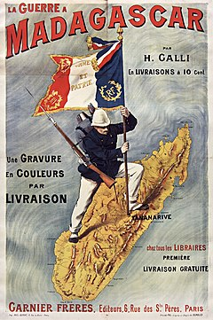
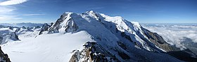
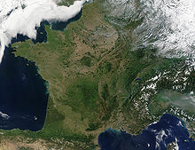

-Tarihi-
Merhaba, hoşgeldiniz. Öncelikle bu web sayfamda size Fransızları, fransanın meşhur yerlerini, yemeklerini vb tanıtmayı
amaçlıyorum ve sizlere Fransa hakkında güzel bilgiler vermeyi istiyorum lütfen web sitemden ayrılmayın...
Fransa veya Fransız Cumhuriyeti ana kara toprakları Batı Avrupa'da bulunan ve dünyanın pek çok bölgesinde denizaşırı
toprakları olan bir ülkedir.
Kıta Fransa'sı, güneyde Akdeniz'den kuzeyde Manş Denizi ve Kuzey Denizi'ne, doğuda Ren Nehri'nden batıda Atlas Okyanusu'na kadar
yayılan topraklarda yer alır. Fransızlar, ülkelerini topraklarının biçiminden ötürü Altıgen olarak adlandırırlar.
Fransa, yönetimde yarı başkanlık sisteminin uygulandığı üniter bir devlettir. Ülkenin başlıca ilke ve ülküleri İnsan ve Yurttaş
Hakları Bildirisi'nde açıklanmıştır.
Fransa'nın Avrupa kıtasındaki komşuları Belçika, Lüksemburg, Almanya, İsviçre, İtalya, İspanya, Monako ve Andorra'dır. Akdeniz'de
İtalya'ya ait Sardinya Adası'ndan sadece 12 km uzaktaki Korsika adası da Fransa'ya aittir. Sahip olduğu denizaşırı illerde de,
Fransız Guyanası aracılığıyla Brezilya ve Surinam'a, Saint Martin Adası aracılığıyla da Hollanda Antilleri'ne sınırı vardır.
Fransa, Manş Denizi'nde deniz yüzeyinin altından geçen Manş Tüneli'yle Birleşik Krallık'a bağlanmaktadır.
Fransa, 17. yüzyılın ikinci yarısından bu yana dünya genelinde uluslararası ilişkiler alanında önde gelen ülkelerden olmuştur.
18 ve 19. yüzyıllar arasında, Fransa dönemin en büyük sömürge imparatorluklarından birini kurmuştur. Bu dönemlerde Fransa'nın
sınırları Batı Afrika'dan, Güneydoğu Asya'ya kadar uzanmış, etki ettiği bölgelerdeki toplumların kültür ve siyasetlerinde belirgin
izler bırakmıştır.

-Coğrafyası-
Metropolitan Fransa olarak adlandırılan, ülkenin Avrupa sınırları içinde bulunan bölümü, kıtanın batı bölümünde yer almaktadır.
Ancak Fransa; Kuzey Amerika, Karayipler, Güney Amerika, Hint Okyanusu, Büyük Okyanus ve Antarktika'ya yayılan geniş bir
coğrafyada çok sayıda il ve özel bölgeye de sahiptir. Bunlardan doğrudan Fransa'ya ait olanlar denizaşırı iller; kendi içlerinde
bağımsız, savunma konusunda Fransa ile anlaşmalı olan ortak ülkeler ise collectivités d'outre-mer kısaca COM
(Türkçe: Denizaşırı Topluluklar) olarak adlandırılır.
Fransa'nın Avrupa kıtasındaki toprakları 547.030 kilometrekarelik[12] bir alan kaplar. Bu alanla Fransa, Avrupa Birliği içinde
İspanya'dan biraz farkla toprak bakımından en büyük ülke sıfatını taşır. Fransa toprakları, batıda ve kuzeyde kıyı ovalarından,
güneydoğuda Alp dağ zincirine, iç Fransa'da Massif Central olarak anılan yüksek bölgelere ve güneybatıda Pirenelere kadar uzanan
değişik bölgelerde, farklı yer şekillerine sahiptir. Alplerde yer alan ve Batı Avrupa'yla Avrupa Birliği'nin en yüksek noktası
olan 4807 metre yüksekliğindeki Mont Blanc, Fransa ile İtalya sınırında yer almaktadır.
Kıta Fransası ayrıca Loire Nehri, Garonne Nehri, Seine Nehri ve Rhône Nehri gibi büyük ve karmaşık bir akarsu ağıyla örülmüştür.
En alçak noktası deniz yüzeyinin iki metre altında bulunan Camargue deltası içinde yer almaktadır.[13] Yüzölçümü
8.680 kilometrekare olan Korsika adası ise Akdeniz kıyısındaki Nice kentine 128 deniz mili uzaklıktadır.
Denizaşırı iller ve ortak topraklar da işin içine katıldığında Fransa'nın toplam yüzölçümü 674.843 kilometrekaredir.
(Antarktika, Adélie Bölgesi hariç) Bu hâliyle Fransa yeryüzünün %0.45'ini kaplar. 11 milyon kilometrekareyle Fransa,
Amerika Birleşik Devletleri'nin ardından dünyanın en büyük ikinci münhasır ekonomik bölgesine de sahiptir.

Mont Blanc, Batı Avrupa'nın en yüksek zirvesi, İtalya sınırını işaret eder. Ve Fransanın uzaydan görünümü...
-Ekonomisi-
Fransa, Avrupa'nın iktisadi açıdan güçlü ülkelerinden olmakla birlikte, yakın dönemde uygulanmaya başlanan iktisadi
dünya pazarına uygulama siyasetinde güçlüklerle karşılaştığını 1971-1976 dönemi arasında ticaret bilançosunun 1986
yılı dışında sürekli açık vermiş olması da kanıtlamaktadır. Bu olumsuz nokta bir yana bırakılırsa Fransa, tarım ürünleri
bolluğu ve çeşitliliği ile Avrupa Ekonomik Topluluğu içinde birinci sırada, süt ürünleri açısından da dünyada dördüncü
sırada (nitekim Fransa tarım- besin sanayi ürünleri dışsatımında dünya ikincisidir) yer almasının yanı sıra, sanayisi de
çok güçlü bir ülkedir.